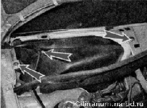
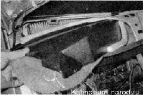
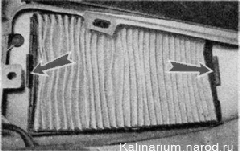
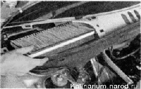
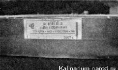

Фильтр вентиляции и отопления салона - заменаСнятие 1. Подготавливаем автомобиль к выполнению работы. 2. Снимаем правую часть решетки воздухопритока. 3. Крестовой отверткой отворачиваем саморез крепления трубки омывателя к экрану и два самореза крепления защитного экрана фильтра к кузову. 4. Извлекаем экран из короба воздухопритока.  5. Освобождаем два фиксатора фильтрующего элемента. 
6. Снимаем фильтрующий элемент. 
Установка Устанавливаем фильтрующий элемент в обратной последовательности. При этом этикетка, наклеенная на его рамку, должна быть обращена к передней части автомобиля, а стрела на этикетке направлена вниз.  |